The feel
Frutiger Aero is the look technology companies gave their screens after Y2K: cool blues, calm greens, airy swooshes, leaves, bubbles and water droplets, seen through the glass window borders of Windows Vista.1 A new phone booted into stock images of sunflower fields and oversaturated blue skies, and it all added up to a naturalistic look in which indoors and outdoors seemed to merge.2
It was built to reassure: i-D reads it as the corporate answer to the futuristic chaos of Y2K, using nature, clean lines and calm colours to make products look reliable and non-threatening.1 Evan Collins of the Consumer Aesthetics Research Institute thinks companies wanted to seem approachable and friendly as computers reached people who had not felt comfortable with them, and that glossy, jelly-like interfaces may have helped people get used to touch screens.2 The artist who coined the name calls it "humanist, skeuomorphic design", "an attempt to make technology appear more naturalistic and organic".3
- glassy
- wet
- sunlit
- weightless
- showroom-clean
- lens-flared
- corporate-hopeful
Where it comes from
Writers date the look to roughly 2004 to 2013, after the Y2K era.4,2 Apple's Aqua, which Steve Jobs showed with Mac OS X in January 2000, made translucence a key element: you could peer through command boxes to the documents underneath.5 Windows Vista named its user experience Aero, for "authentic, energetic, reflective, and open",6 and framed its windows in glass.1 The name came later,7 from the Consumer Aesthetics Research Institute, which credits Froyo Tam and Sofi Xian (Sofi Lee in 2023 coverage) and joins Windows Aero to Adrian Frutiger's typeface.8,2 Apple said goodbye to skeuomorphism with iOS 7 in 2013,9 and ten years later the look returned as a nostalgia trend on TikTok and YouTube.2,3
Core elements
Translucent glass panels
Window frames are translucent glass, meant to look attractive and lightweight and to keep attention on the content instead of the interface around it.10 CARI lists glassy, transparent materials among the style's motifs.8
Nature photo backdrops
Backdrops show fields of pristine grass, clear water and bright gleaming cities in blue and green.4 CARI adds photographs of the aurora borealis, bokeh and macro shots of grass,8 and i-D adds dewy grass and flower petals as user pictures.1
Bubble and water-droplet motifs
Round, wet shapes do the decorating: bubbles and dewdrops,3 splashes and droplets, which also showed off what the new high-resolution screens could display.1 Sofi Xian adds globes to the list.2
High-gloss jelly surfaces
Jobs said Apple had made Aqua's buttons "look so good you'll want to lick them".5 Vista struck Sofi Xian as "glossy and glowing", and Evan Collins describes the era's interfaces as "glossy, translucent, jelly-like, glowing".2
Skeuomorphic icons
Objects are skeuomorphic: icons are shaded to look like their 3D equivalents.3 Microsoft wanted Vista's icons "more realistic than illustrative, but not quite photorealistic", with 3D objects drawn in perspective as solids and flat ones shown straight-on.6
Humanist sans-serif type
CARI counts Frutiger and other humanist sans-serifs among the motifs, and says Frutiger inspired Vista's default font, Segoe UI.8 Microsoft calls Segoe UI "an approachable, open, and friendly typeface" with the characteristics of a humanist sans serif.11
How to do it
Choose the backdrop first
Pick the backdrop before the interface: Corrie Haffly's glass button is particularly effective over photographs and other non-solid backgrounds.12 The usual subjects are pristine grass, clear water and gleaming cities in blue and green.4
Blur the backdrop behind glass
Blur only what shows through a panel that is partly transparent: MDN's example pairs a white background at 30% opacity with a 10 px blur.13 In a 3D scene, sample the screen image behind the surface from a lower mipmap level; the higher the level, the stronger the blur.14 Lower the blur strength to let more of the scene show through.15
Build a glossy aqua button
Corrie Haffly's recipe starts with a gradient from aqua #3cc9e2, placed at 25%, to blue #1160c2, then adds a dark blue inner glow (#003298, 50%, about 10 px) and a bright aqua outer glow (#00bae8, 50%, 5 px).12 For the shine, duplicate the shape, give it a white gradient that fades to 0% opacity, squash it upwards, pull its sides just inside the button and flatten its lower edge.12 Put the label between the button and the highlight, then copy the effects to every other button.12
Draw and light icons in perspective
Draw 3D objects in perspective from a low bird's-eye view with two vanishing points, lit from above, slightly in front and slightly to the left by parallel rays, like the sun.6 Cast shadows to the rear right at 30 to 50% opacity, make the largest size 256x256, and redraw small sizes with their key details exaggerated instead of scaling down.6
Add thin-film colour to bubbles
Build bubbles from a fully transmissive material and add a thin film on top, which simulates the interference colouring seen on soap bubbles.16 The effect is strongest at a film thickness of roughly 100 to 1000 nanometres, and a film IOR of 1.33 approximates water.16
Set the type
Use a humanist sans such as Segoe UI: Vista's defaults were 9 pt black for body text and 12 pt blue #003399 for main instructions.11 Keep any text that must be read dark on a light background.11
Soften the animation and sound
Animate with a fast start and a soft landing, keep any transition the user waits for to 200 ms or less, and let glass behave like glass, which is why Microsoft calls Windows 7's "squeegee" animation authentic.17 Keep sounds quiet: Vista's 45 sounds were more muted, less jarring versions of XP's prompts, and its startup sound is four chords in four seconds.18
Cheat sheet
- Glass
- White at 30% over a 10 px background blur13
- Aqua button
- #3cc9e2 at 25% to #1160c2; glows at 50%, 10 px inner, 5 px outer12
- Light
- Above, slightly in front and to the left; parallel rays6
- Shadows
- 30 to 50% opacity, to the rear right6
- Icon sizes
- Up to 256x256; straight-on at 16x16 and below6
- Type
- Segoe UI 9 pt; main instructions 12 pt #00339911
- Transitions
- 200 ms or less, fast start, soft landing17
- Bubble film
- 100 to 1000 nm thick, IOR 1.3316
Do
- Light every object from the same direction, so all shadows share one length and density.6
- Fill the world with the style's subjects: grass, clear water, aurora and bokeh.8,4
- Keep it approachable and friendly, which Evan Collins thinks is part of why companies adopted the look.2
- Design sounds and animations to survive the thousandth play, not just the first.18,17
Avoid
- Glass everywhere. Microsoft kept it to small regions touching the window frame, and chose a plain background wherever that was more attractive or easier to use.10
- Text set on glass. Microsoft's glass regions carry no text, or graphics with a single strong label.10
- Y2K's diamante bling and futuristic chaos. Frutiger Aero is the calmer, more hopeful look that followed it.2,1
- Full-saturation colour on icons. Vista's icons were less saturated than XP's, and full saturation was the one thing their palette avoided.6
- Hunting for the Frutiger typeface itself. Vista used Segoe UI, a humanist sans that CARI says Frutiger inspired.8,11
Tools and tutorials
- 7.css
A free design system for building Windows 7 glass on the web.
- MDN: backdrop-filter
The CSS property behind real blurred glass, with examples.
- Godot: screen-reading shaders
How to sample and blur what is behind a surface in Godot 4.
- Background Blur widget
A frosted-glass panel for game interfaces, with its blur strength explained.15
- Principled BSDF: Thin Film
Transmission and thin-film settings for soap bubbles and glass coatings.16
- Noto Sans
A free humanist sans close to the Frutiger and Segoe mood. This page uses it.
Palette
Sampled from the four images at the top. Vista gives the teal and lime, Wii Sports Resort the sky, water and grass, the Wii Menu the silver and that thin cyan line.
Feel the vibe
In motion
Listen
Music for browsing a store made of light blue pills. i-D counts Nintendo Wii themes as part of the style's sound.1
YouTubeSoft, tidy and a little weightless, like the menu it plays over.
YouTubeHoliday brass over a very blue sea.
YouTubeCheerful shopping-centre music. Listen for the consumer optimism of the era.
YouTubeFripp at work on Vista's sounds. He recorded hours of layered guitar, and Microsoft cut the few seconds of the startup sound from them.18
YouTube
More references
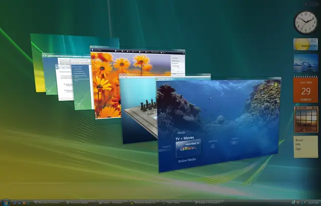
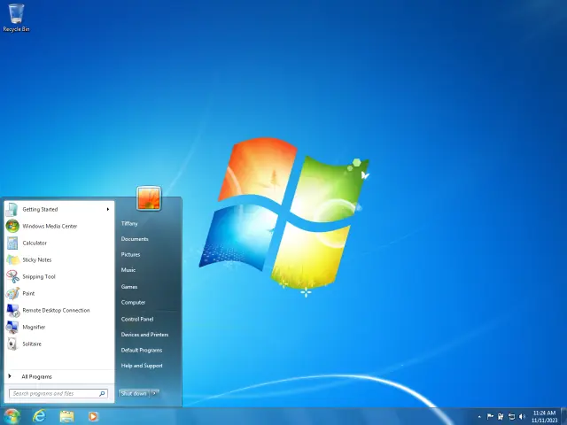
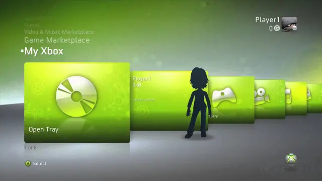
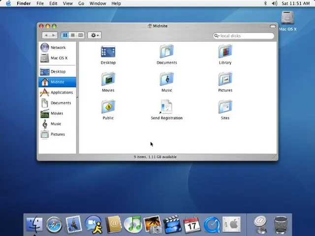
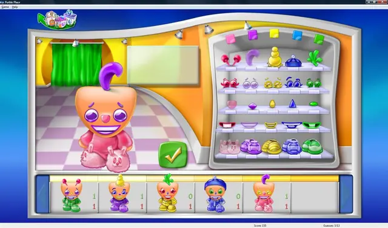
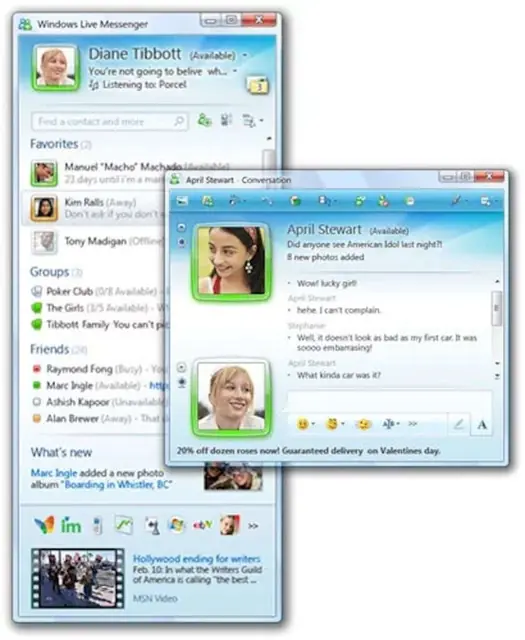
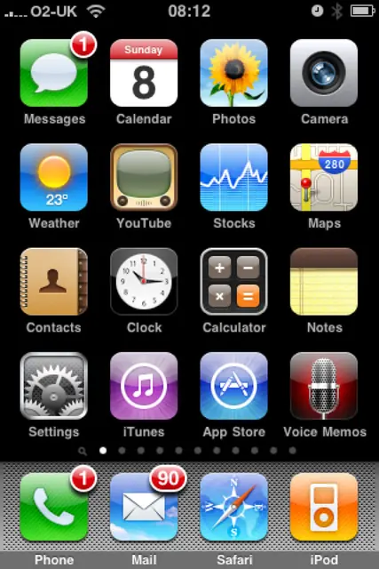
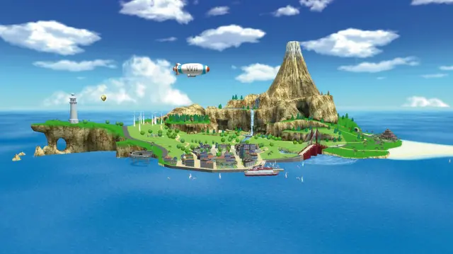
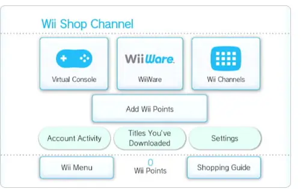
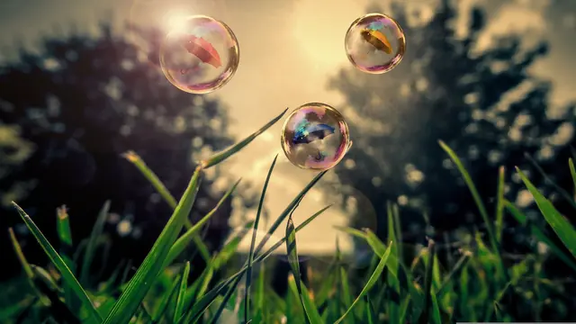
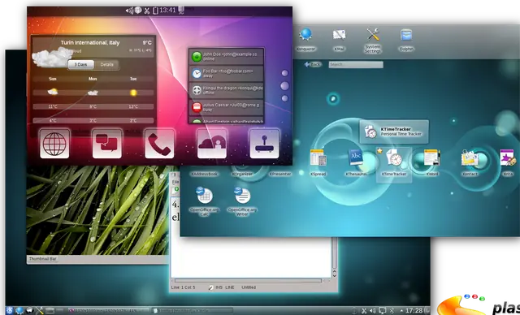
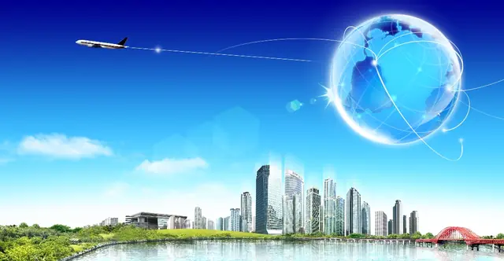
Games
- Wii Sports
Clean, friendly 3D. The Guardian counts a fondness for Wii Sports, soundtrack and all, as part of the style.3
- Wii Sports Resort
Nintendo made Wuhu Island large, with plenty of open space, and turned the island into a kind of character.19 Study how far big simple shapes and a huge sky can go.
- Spore
Gel creatures, bubbly water and a glossy editor interface.
- Purble Place
It came with every copy of Windows Vista and 7, and its look is now counted as Frutiger Aero.7 Rounded, shiny and very pleased to see you.
- The Sims 3
Blue-sky suburbia with an interface made of glassy pills. Dazed spots the style in the shimmery faces of its Sims.2
Film, art and more
- Windows Aero
The design language the style takes its name from.8
- Aqua
The glassy "aqua buttons" started here.12 Jobs said they looked good enough to lick.5
- Frutiger Aero, CARI
The Consumer Aesthetics Research Institute's page on the term.
- Bliss
Study how much a green hill and a blue sky can carry on their own.
- Frutiger
Adrian Frutiger's humanist sans, which gives the style half its name.8
Sources
- 1What Frutiger Aero teaches us about niche internet aesthetics
- 2What is frutiger aero, the aesthetic taking over from Y2K?
- 3Frutiger Aero: the Windows screen saver design trend taking TikTok by storm
- 4Finding the future in digitally mediated ruin: #nostalgiacores and the algorithmic culture of digital platforms
- 5Steve Jobs’ Apple gets way cooler
- 6Icons (Design basics)
- 7Purble Place: the mystery behind gen Z’s favourite forgotten video game
- 8Frutiger Aero
- 9Jony Ive killed skeuomorphic design with iOS 7 ten years ago, and he was right to
- 10Window Frames
- 11Fonts
- 12Build Beautiful Buttons in Photoshop, Part II
- 13backdrop-filter
- 14Screen-reading shaders
- 15Background Blur Widget
- 16Principled BSDF
- 17Animations and Transitions
- 18The Sound of Vista
- 19Iwata Asks: Wii Sports Resort